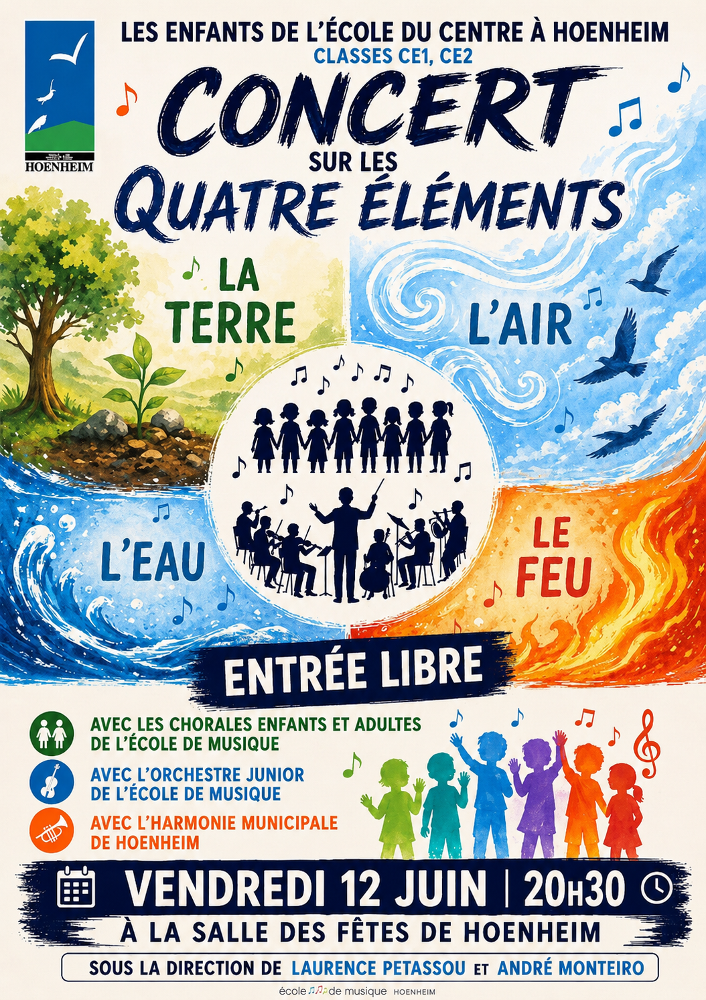

- Cet événement est terminé
Concert des Quatre Éléments – Vendredi 12 juin à 20h30
12 juin à 20 h 30 min - 22 h 30 min
Navigation de l'événement

Dans le cadre du partenariat entre l’École de musique et l’École élémentaire du Centre de Hoenheim, un grand concert est organisé le vendredi 12 juin à 20h30 à la salle des fêtes.
Ce projet met à l’honneur le travail réalisé tout au long de l’année par les élèves et les enseignants autour d’un programme musical varié, placé cette année sous le thème des quatre éléments.
Sur scène, le public pourra retrouver les élèves de CE1 et CE2 de l’école élémentaire du Centre, les chorales enfants et adultes de l’École de musique, l’orchestre junior ainsi que l’harmonie municipale de Hoenheim.
L’organisation de cette soirée est assurée par l’Harmonie de Hoenheim et Madame Petassou, intervenante au sein des écoles, qui participent à la coordination artistique et logistique de l’événement.
Ce concert constitue un temps fort de la saison culturelle et illustre la volonté de la Ville de favoriser les échanges entre les établissements, de renforcer les liens entre les générations et de partager un moment musical convivial et fédérateur.
📍 Salle des fêtes de Hoenheim
🕗 Vendredi 12 juin 2026 à 20h30
🎶 Entrée libre dans la limite des places disponibles.